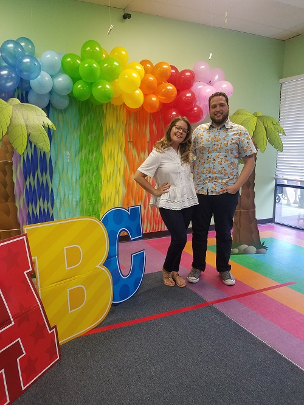
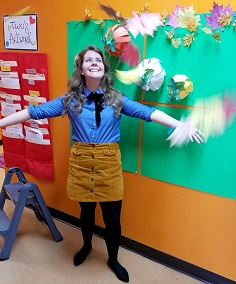

The Melbourne Preschool is . . . A community-oriented hands-on learning center that focuses on the development and happiness of every child. At The Melbourne Preschool, it is our belief that it takes an entire community to raise a child, and our teaching methods reflect this philosophy. We believe that every child is as unique as the strategies we utilize to challenge their skills and promote cognitive, physical, and emotional growth. We aim to provide an environment where self-directed learning is encouraged, guided, and fostered. With this objective, our children are being prepared to be life-long learners. In today's fast-paced and ever-evolving world, those who develop a love for learning at an early age will have the greatest advantage of all: Nothing is out of reach for someone who loves to constantly learn and improve themself. Come meet with Alex and Rebecca Arsic at the center to learn more about how we can guide your children for a lifetime of success.
The Ones (12 months and up)
Through music, dance, story time, and free-play, our one-year-olds have every chance to explore their environment and personality. Physical development is a key objective, where fine and gross motor skills are trained daily.
Toddlers (18 to 24 months)
Similar to our One-year-old program, the Toddlers is a step up for those who are ready for more creative and academic challenges. Continuing to encourage the development of gross and fine motor skills, creativity and language; socialization is also fostered in the Toddler class. The teacher’s main focus in this classroom is to prepare children for the faster paced routine of the Two-year-old class, to ensure a smooth transition between these age groups.
The Twos
Teamwork, cooperation, and individual project work are the focus of this class. Toilet-training, language acquisition, indoor and outdoor physical exploration, and more advanced fine-motor skills are also on the daily menu
The Threes
What an exciting time! Once children have mastered toileting habits, our teachers can begin to introduce more academically challenging material. With a more developed vocabulary, word games and theme-based learning are important for this class. More complex physical games and discovery-based learning strategies are utilized to encourage further social and scholastic development.
The Fours (Pre-VPK)
In our Four-year-old class, the daily schedule includes more advanced problem-solving activities, and imaginative pretend play. As we are sure you know, physical play and organized gross-motor activities are a must. Energy is spent in a positive, productive, and self-directed way. In addition to creative self-expression, academic work such as writing, reading, mathematics and vocabulary development is added to the curriculum. The Fours follow a similar routine to our VPK class, to ensure a comfortable transition between our Preschool and Pre-Kindergarten program.

At The Melbourne Preschool, we pride ourselves on the quality and originality of our VPK program. It is our belief that it takes an entire community to raise a child, and our VPK program reflects this philosophy. Our program does not only focus on academics, but socialization, emotional growth, cooperation and problem-solving skills, as well as the holistic development of each individual student. This way, students receive a well-rounded education, which prepares them for the faster-paced rigors and social atmosphere of grade school. At The Melbourne Preschool, our VPK Certified teachers’ focus is to foster a love of learning and curiosity in your child, through engaging and enriching hands-on activities. A plethora of subjects are covered throughout the school year, including Mathematics, Science, Cooking, Reading and Writing, Creative Arts, Music, Media exploration, Physical Education (such as Yoga and organized outdoor games), and much more. Our VPK class is often privilege to special visitors who give specialized lessons. Such visitors include Librarians, Astronomers, Musicians, members of the Melbourne community such as Police officers and Firemen, and many more. Parents of VPK students are always welcome to volunteer their time in this classroom, as we believe the beautiful diversity of our community helps to enrich and shape the minds of our young learners. It is our goal to prepare your child for a lifetime of learning in, and out of the classroom. Our fun and challenging curriculum, combined with our thorough and thoughtful lesson plans, are designed to prepare your child for the academic journey that lies ahead. This program runs from mid-August to mid-May.
Rebecca & Alex Arsic - Owners
Mr. Alex is The Melbourne Preschool’s Mr. Do-It-All! With a B.A. in Child Studies, an M.A. in Educational Studies, and 13 years of experience in the field of education, Mr. Alex is a stickler for policy and procedures. He serves as the liaison between The Melbourne Preschool and local and state-wide organizations such as the Early Learning Coalition of Brevard, and the Florida Department of Children and Families. You can always find Mr. Alex upbeat and smiling, no matter what the day brings. If he isn’t managing or working with community organizations, you can find Mr. Alex with his work gloves on, making improvements to our center. Miss Rebecca is The Melbourne Preschool’s front of house. If there is anything you need, or any questions you may have, Miss Rebecca is ready to help. With a B.A. in Child Studies and 7 years of experience in the field of education, Miss Rebecca is our teacher’s go-to for guidance concerning curriculum, lesson planning, educational tools and educational psychology. Miss Rebecca enjoys working closely with our teachers to ensure that The Melbourne Preschool’s strict educational, recreational and organizational standards are consistently met. Miss Rebecca is also our in-house social media coordinator. She earned her graduate degree in Media Studies, and is the woman behind The Melbourne Preschool’s Facebook, videos, website and advertising. Miss Rebecca doesn’t get her hands dirty - she gets them sparkly! She can often be found crafting with our students, creating art pieces for the school with our teachers, and substituting in classrooms.
Odalis Bravo - Director
Miss Odalis has been working in early childhood education centers for 22 years. She graduated from Eastern Florida College with her Florida Child Care Professional Credential (FCCPC), and Director Credential. Over the past 10 years, Miss Odalis has been working as a Director in early learning centers, always ensuring that strict standards are not only met, but exceeded. A true team player and positive role model, parents love Miss Odalis because of her personable service, attention to detail, and following up on each parent and student’s needs. Miss Odalis is often running the front of house with Miss Rebecca, but you can also find her substituting in The One’s classroom, where she loves working with our youngest group to help prepare them for the exciting journey ahead.
Our Team
 Each teacher at The Melbourne Preschool brings their own individual teaching style to their classroom, while following the Melbourne Preschool’s ethos of hands-on, community-based learning. All of our teachers are carefully screened at the state and federal levels, and the majority not only meet, but exceed the DCF standards for Preschool teachers.
During the training process, Mr Alex and Miss Rebecca are highly involved as they believe training is a two-way street: while they guide our teachers in The Melbourne Preschool’s hands-on and creative learning style, much can also be learned from each individual teacher.
In three words, we would describe our close-knit team of teachers as enthusiastic, loving and quirky!
Each teacher at The Melbourne Preschool brings their own individual teaching style to their classroom, while following the Melbourne Preschool’s ethos of hands-on, community-based learning. All of our teachers are carefully screened at the state and federal levels, and the majority not only meet, but exceed the DCF standards for Preschool teachers.
During the training process, Mr Alex and Miss Rebecca are highly involved as they believe training is a two-way street: while they guide our teachers in The Melbourne Preschool’s hands-on and creative learning style, much can also be learned from each individual teacher.
In three words, we would describe our close-knit team of teachers as enthusiastic, loving and quirky!

Phone +1 321-255-7888
Fax +1 321-255-7666
E-mail TheMelbournePreschool@gmail.com
The Melbourne Preschool
1308 Sarno Rd,
Melbourne, FL 32935

If you are interested in joining our team here at The Melbourne Preschool, please fill out the sections below, or send an e-mail with your resume to: TheMelbournePreschool@gmail.com